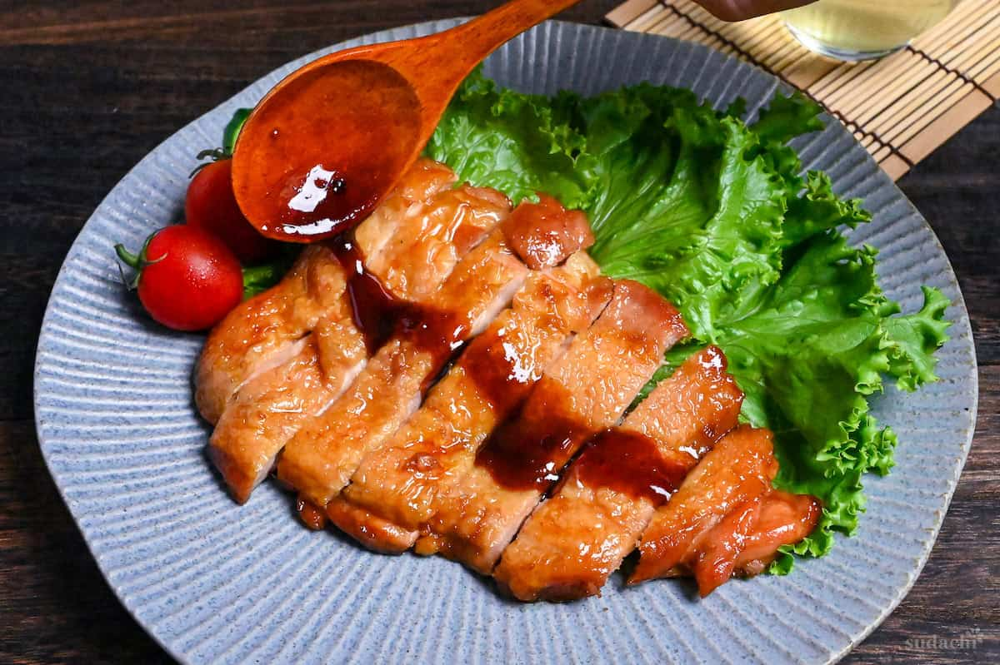
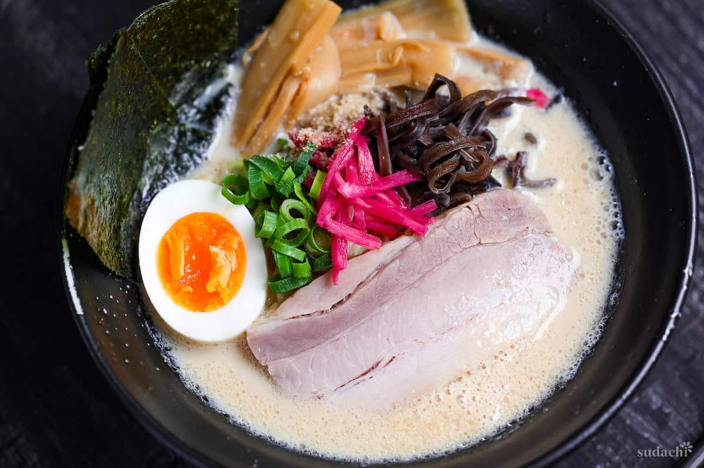

450 g udka z kurczaka bez kości, ze skórą (ok. 2 szt.)
szczypta soli
0,5 łyżki skrobi ziemniaczanej (lub kukurydzianej)
0,5 łyżki oleju do smażenia
1,5 łyżki sosu sojowego
1,5 łyżki mirinu
1,5 łyżki sake (lub wody)
1 łyżeczka cukru brązowego
1,5 łyżki bulionu dashi (lub wody z odrobiną dashi instant)
0,5 łyżeczki miodu
Przygotowanie:
Oczyść i wyrównaj mięso, nakłuj skórę widelcem, osusz papierem i posól.
Oprósz delikatnie mięsną stronę skrobią.
Rozgrzej patelnię z olejem i smaż kurczaka skórą do dołu ok. 7 minut, aż będzie chrupiąca.
Odwróć i smaż jeszcze 2 minuty, następnie odlej nadmiar tłuszczu.
Wlej sos (soja, mirin, sake, cukier, dashi, miód) i gotuj, aż zgęstnieje i oblepi mięso.
Odstaw na 3 minuty, pokrój w plastry i polej sosem z patelni.
Podawaj z ryżem i lekką sałatką.

"Oszukany" Tonkotsu Ramen
Składniki (2 porcje):
320 ml wody
320 ml niesłodzonego mleka sojowego
2 łyżki chińskiego bulionu drobiowego w proszku
1 łyżka smalcu
2 łyżeczki pasty czosnkowej lub startego czosnku
2 łyżeczki sosu ostrygowego
2 łyżeczki sosu sojowego
1 łyżeczka granulek dashi
2 porcje makaronu ramen
Dodatki: boczek chashu, jajko ramen, grzyby, szczypiorek, wodorosty nori
Przygotowanie:
W garnku wymieszaj wodę, mleko sojowe, bulion w proszku, smalec, czosnek, sos ostrygowy, sos sojowy i dashi. Podgrzewaj na małym ogniu, nie dopuszczając do zagotowania.
W osobnym garnku ugotuj makaron ramen zgodnie z instrukcją na opakowaniu.
Odcedź makaron i rozłóż do misek.
Zalej gorącym bulionem i udekoruj ulubionymi dodatkami (np. boczek chashu, jajko, szczypiorek, wodorosty nori).
Podawaj od razu, póki gorące.

Łosoś w glazurze miso
Składniki (2 porcje):
2 filety z łososia (ze skórą)
1 łyżka pasty miso (najlepiej żółtej/awase)
1 łyżka sake (lub białego wina / wody)
1 łyżeczka startego czosnku lub pasty czosnkowej
1 łyżeczka sosu sojowego
1 łyżeczka brązowego cukru
1 łyżka skrobi ziemniaczanej (lub kukurydzianej)
1 łyżka oleju sezamowego (lub neutralnego)
szczypta soli
1 łyżka posiekanego szczypiorku do posypania
Przygotowanie:
W miseczce wymieszaj pastę miso, sake, czosnek, sos sojowy i cukier - to będzie glazura.
Opłucz i osusz filety z łososia, posól z obu stron i lekko obtocz w skrobi.
Rozgrzej patelnię z olejem sezamowym. Smaż łososia skórą do dołu przez ok. 2 minuty, potem odwróć i smaż kolejne 2 minuty (aż osiągnie ok. 52°C w środku).
Wyłącz ogień i wlej glazurę. Obracaj filety, aż całe pokryją się sosem i lekko zgęstnieją w resztkowym cieple.
Podawaj od razu, posypując szczypiorkiem. Najlepiej smakuje z ryżem, miso shiru i kiszonkami w stylu teishoku.
Tofu Donburi w sosie teriyaki - szybki przepis
Składniki (2 porcje):
350 g twardego tofu
50 g zielonej papryki (pokrojonej w kostkę)
50 g pora (pokrojonego ukośnie)
3 łyżki skrobi ziemniaczanej (lub kukurydzianej)
2 łyżki sosu sojowego
2 łyżki mirinu
2 łyżki sake (lub wody)
2 łyżeczki cukru
0,5 łyżki pasty czosnkowej
2 porcje ugotowanego ryżu krótkoziarnistego
olej do smażenia
dodatki: sezam, szczypiorek, olej chili (rayu)
Przygotowanie:
Owiń tofu ręcznikiem papierowym i podgrzej w mikrofalówce 2 minuty (600W), aby usunąć nadmiar wody. Odstaw do ostygnięcia.
Podsmaż paprykę i pora na oleju, aż się lekko przyrumienią. Odłóż na bok.
Pokrój tofu w kostkę. Oprósz solą, pieprzem i obtocz lekko w skrobi.
Na rozgrzanej patelni usmaż tofu na złoty kolor ze wszystkich stron.
W miseczce wymieszaj sos sojowy, mirin, sake, cukier i czosnek. Wlej na patelnię do tofu.
Dodaj podsmażone warzywa i smaż, aż sos zgęstnieje i oblepi składniki.
Podawaj na ryżu, posyp sezamem, szczypiorkiem i skrop olejem chili.